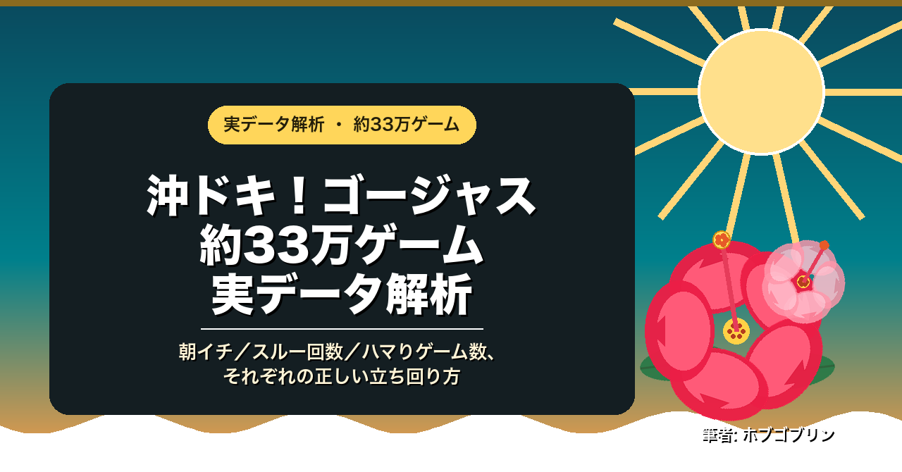

実データ解析・約33万ゲーム
沖ドキ！ゴージャス 約33万ゲーム実データ解析 ― 朝イチ／スルー回数／ハマりゲーム数、それぞれの正しい立ち回り方
沖ドキ！ゴージャスを、約33万ゲーム・大当たり3,129回分の実データで検証。よく語られる「通説」は、実際どこまで合っているのか。
- 天国・ドキドキ・超ドキドキ、それぞれの継続率(75%/80%/90%)は実データでも同じ形に見えるか
- 「引き戻し中には200Gの天井がある」という通説を、実データで検証
- 朝イチでチャンスモードの台に座れる確率は、体感とどれくらい違うか
- 検証に使った生データ(匿名化CSV)も公開。読者自身の手元で検算できます